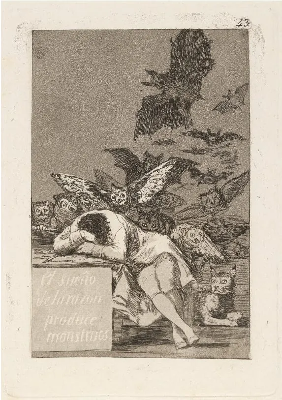
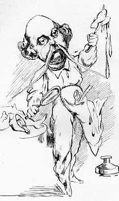
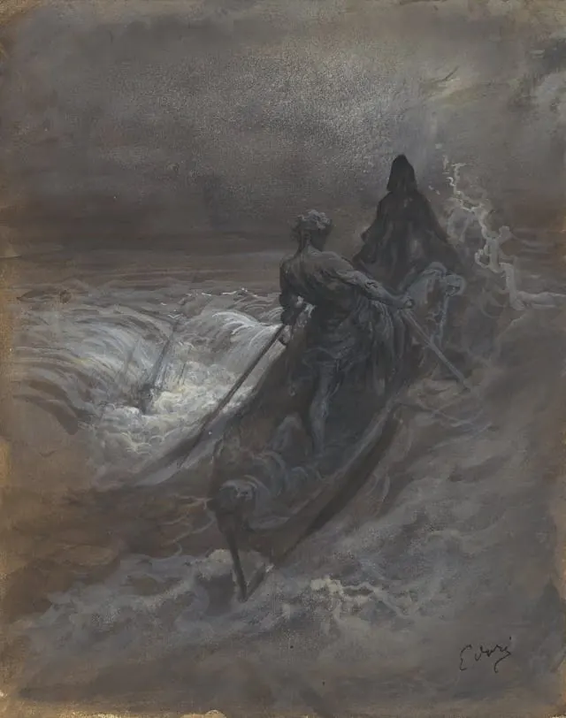
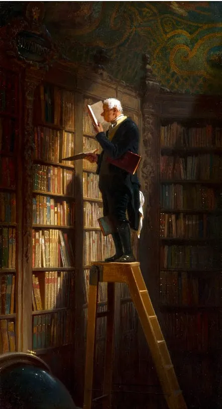
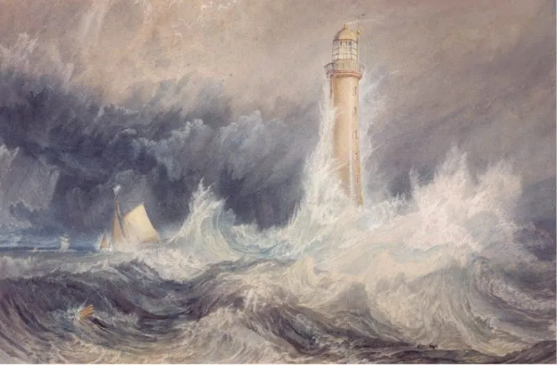

Diario de un Robot · 11 de octubre de 2020October 11, 2020 · Serie: ¿Deberíamos escribir?
¿Qué deberíamos escribir?
No debemos restringir nuestra voz al mundo que nos tocó. Podemos hacerlo crecer para incorporar voces ajenas a través de lecturas y…
This essay is only available in Spanish for now.

¿Qué deberíamos escribir?
Escribamos lo que nos gusta y sepamos de lo que escribimos.
¿Qué pasó en el artículo anterior?
Ya establecido que deberíamos escribir, hablamos sobre cuándo deberíamos escribir y llegamos a una conclusión rápida: ahora. Más allá del carpe diem, el memento mori y otras locuciones latinas, al momento de sentarnos a escribir surge una duda evidente. ¿Qué deberíamos escribir? Analicemos qué opciones tenemos frente a la página en blanco.
¿Escribir de lo que sabemos o saber de lo que escribimos?
Una idea instalada en la tradición literaria puede estar dañando nuestra expresividad. Se trata de un slogan repetido en cursos y artículos, el lema: “escribí de lo que sabés”, un corsé que limita a los creadores a un espacio determinado. Escribir de lo que sabés suele implicar una restricción sobre tomar las voces de quienes no son considerados nuestros semejantes. De este concepto derivan otros como la apropiación cultural, el whitewashing y demás similares. Tópicos que merecen un artículo en sí mismo y de los que se debe hablar con fundamentación. No es este el caso ni el artículo.
La escritura y la expresión creativa en general no deben limitarse a nuestro trasfondo social/familiar, etnia, orientación sexual o demás posibilidades. No podemos negar el hecho de que vivir algo en carne propia nos permite expresarlo con veracidad, pero no es condición necesaria. Estas características son las que construyen parte de nuestra voz, pero la investigación y el interés genuino pueden llevarnos a una posición que nos era ajena.
No debemos restringir nuestra voz al mundo que nos tocó. Podemos hacerlo crecer, expandirlo para incorporar voces ajenas a través de lecturas y conversaciones. Poner restricciones temáticas corta nuestra creatividad e imaginación. El imperativo “No escribas de lo que no sabés” puede generar corrientes como el movimiento #OwnVoices. Queda en cada uno admitir ser encasillado de antemano.
Creo que Shakespeare se habría asombrado si hubieran pretendido limitarlo a temas ingleses, y si le hubiesen dicho que, como inglés, no tenía derecho a escribir Hamlet, de tema escandinavo, o Macbeth, de tema escocés. El culto argentino del color local es un reciente culto europeo que los nacionalistas deberían rechazar por foráneo. — J. L. Borges, “El escritor argentino y la tradición”, Discusiones.
¿Madame Bovary o Gustave Flaubert?

En Madame Bovary (1857) de Gustave Flaubert, una de las primeras novelas realistas, un hombre retrata la vida de una mujer. Partidario de “le mot juste” (la palabra exacta), Flaubert logra plasmar la vida en provincia de una mujer insatisfecha. Juzgado en su época por “el realismo vulgar y a menudo impactante del retrato de los personajes” (del francés en: Le procureur Ernest Pinard, le censeur de Flaubert et Baudelaire), lo que denota la capacidad de ponerse en el lugar de otro. A pesar de que uno muchas veces note la diferencia entre personaje y escritor, esa distancia puede ser positiva. Además, esta obra tomó cinco años de redacción, aprender de lo que uno escribe toma su tiempo.
Una frase atribuida a Flaubert afirma: “Madame Bovary c’est moi” (‘Madame Bovary soy yo’). Luego de una búsqueda bibliográfica resulta que esta parece ser falsa, viene de una única fuente dudosa, e incluso se encuentra contradicha en las cartas del autor.
En una carta a Mlle Leroyer de Chantepie el 18 de marzo de 1857, encontramos: “Madame Bovary no tiene nada verdadero. Es una historia totalmente inventada; no metí nada de mis sentimientos ni de mi existencia”. El imaginario naturalista del observador preciso puede dar frutos. Quien mira a otro desde afuera puede ver cosas insospechadas, así como los peces no saben qué es el agua. Otros casos ejemplares serían los de Lolita y Nabokov o Gavilán por Ursula K. Le Guin.
¿Para quién escribimos?
Esta es quizás una pregunta demasiado grande para una sección, pero intentemos responderla. Escribimos para nosotros. Si escribimos para el mercado, si escribimos para el público o si escribimos para sonar inteligentes se nota, y queda feo. La finalidad de la escritura es un concepto demasiado amplio y sobre el cual no tengo autoridad (quizás nadie la tenga), pero los artefactos propios de querer gustar y querer vender los puede ver hasta quien recién arranca sus primeras lecturas.
Este fenómeno se ve multiplicado debido a las redes sociales. El deseo de mostrar la producción propia puede ser beneficioso, pero cuando ponemos el carro delante del burro corremos el riesgo de intoxicar nuestra producción. Los me gusta, los comentarios y las interacciones son tan efímeros como los productos generados con ese objetivo en mente. Lo bello del proceso de escritura puede herirse por tener la cabeza en la difusión, en la mirada externa de otro o, aún peor, una masa amorfa de likes y reacciones.
¿Qué nos espera?

Al querer mantener un proyecto durante mucho tiempo siempre vamos a entrar en terreno neblinoso. No paramos de mencionarlo, pero lo vamos a aclarar otra vez: escribir es arduo, especialmente si uno quiere quedar satisfecho con su escritura. Al arrancar un texto podemos tener diferentes motivaciones. Puede ser el sentido del deber: “esto tiene que ser escrito”. Puede ser el rédito: “esto se vende seguro”. Pero cuando el camino se pone difícil, cuando la noche y la duda crecen, el deber no mantiene la escritura, el dinero no mantiene la escritura. El interés la mantiene.
¿Quién nos critica?
No deberíamos preocuparnos por tomar la voz de alguien lejano o distinto a nosotros. No debe existir censura previa al material que escribimos. Una vez que lo escribimos vamos a ser juzgados por quienes nos lean. Deberíamos preocuparnos por saber cómo estamos escribiendo, no sobre qué.
En el artículo anterior mencionamos que un freno importante a la escritura y otros procesos creativos es el miedo al error. Este temor no está en la infancia y crece en nosotros con los años. Si además agregamos la ansiedad social y la aceptación por pares puede que nunca nos animemos a nada. Estar seguro de la propia obra es complicado. Si agregamos el ojo ajeno al trabajar será aún más enrevesado.
¿Qué deberíamos escribir?

Una constante en entrevistas a autores es consultarles sobre sus lecturas. Cuando estemos pensando en escribir esta misma pregunta puede ayudarnos. Los libros que consumimos uno detrás de otro, en especial en el mundo preinternet, pueden ser un gran indicio. Un consejo que muchos indican es que deberíamos escribir lo que nos gusta leer. A la hora de las dudas, que siempre surgen en el proceso, estar interesados en lo que escribimos va a salvar al borrador de quedar olvidado en un cajón.
Como vimos más arriba el interés es lo único que nos va a mantener cuando el proceso se complique. Al producir dentro de lo que nos gusta obtenemos la ventaja de conocer el formato o el género. Sabemos qué funciona y qué no, podemos tomar referencias previas e innovar. Si escribimos algo muy lejano a nuestros intereses va a costarnos juzgar en qué estamos acertando o pifiando. Nunca debemos restringir ni limitar, pero puede ser una idea facilitadora a la hora de empezar.
Lo que nunca presencié es el éxito notorio de la obra de un autor por fuera del campo donde lee habitualmente por placer — Sol Stein, Stein On Writing: A Master Editor of Some of the Most Successful Writers of Our Century Shares His Craft Techniques and Strategies (traducción propia del inglés).
¿Pero cómo saber qué nos gusta? Levantemos la cabeza y miremos nuestra biblioteca. ¿Qué libros hay ahí? ¿Cuáles son nuestros favoritos? ¿Qué nos emociona más cuando entramos a una librería solos? (Si venían al artículo para encontrar respuestas ya se habrán dado cuenta de que se van a ir con más preguntas).
¿Qué ideas tenemos en la cabeza?

La mayoría de las personas tienen algunas ideas en la cabeza. Estas pueden ser una historia, un personaje o un lugar. Suelen volver recurrentemente cuando le damos paz a nuestra mente. Los lugares habituales donde se encuentran son la ducha, lavando los platos o caminando en silencio (entre otros). De vez en cuando aparecen frente a nosotros esos hilos de inspiración que vamos desenrollando en nuestra cabeza. Si además tenemos un espacio dedicado para desarrollarlos al poco tiempo tendremos páginas pobladas de historias. Es así como a partir de un hilo de apariencia caótica podemos hacer aparecer y desarrollar mucho más.
En el comienzo, lo que existía en primer término era la Abertura; los griegos la llamaban Caos. ¿Qué es la Abertura? Es un vacío, un vacío negro en el que nada se puede distinguir. Espacio de caída, de vértigo y desconcierto, sin límites, insondable. Abarcador como una inmensa boca que todo lo engulle en una misma noche indistinta. Pues bien, en el principio no hay sino esta Abertura, este abismo ciego, nocturno, ilimitado. — Jean-Pierre Vernant, Érase una vez… El universo, los dioses, los hombres.
Seguir leyendo
Un ensayo por semana, en tu mail.One essay a week, in your inbox.
Escribo ficción y ensayo desde 2020. Si te gustó este, el próximo llega a tu casilla.I've been writing fiction and essays since 2020. If you liked this one, the next lands in your inbox.
Si te sirvió, invitame un cafecito.If this was useful, buy me a coffee.
Versión corregida para el sitio.Revised version for the site. Original en SubstackOriginal on Substack, 11 de octubre de 2020October 11, 2020.